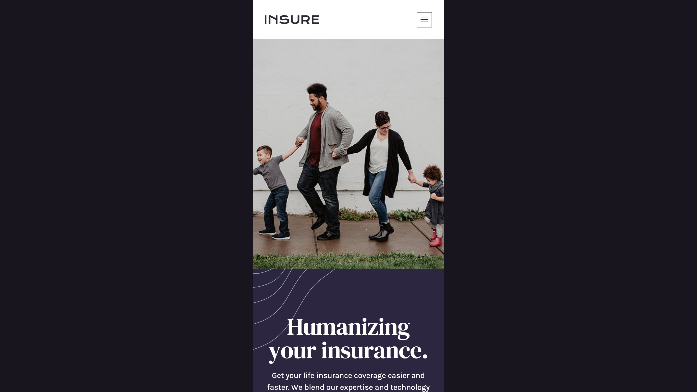
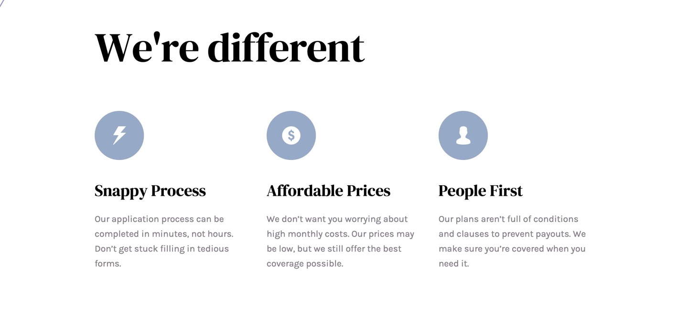

Une page pensée pour le mobile
Sur mobile, la photo et le texte d’introduction s’empilent. La navigation se replie derrière un bouton burger pour laisser de la place au contenu.
Intégration responsive de la page d’accueil d’Insure à partir d’une maquette Figma.

J’ai réalisé ce projet dans le cadre de ma formation en développement web et web mobile. L’objectif était de reproduire la maquette et d’adapter la mise en page aux différentes tailles d’écran.
J’ai structuré la page en HTML et réalisé sa mise en page en CSS. J’ai aussi utilisé JavaScript pour ouvrir et fermer le menu mobile.
HTML
CSS
JavaScript

Sur mobile, la photo et le texte d’introduction s’empilent. La navigation se replie derrière un bouton burger pour laisser de la place au contenu.

La section « We’re different » présente trois avantages. Sur desktop, les blocs sont côte à côte, avec une icône, un titre et un texte pour chacun.
Le principal défi était de retrouver les proportions de la maquette sur desktop tout en gardant une mise en page lisible sur mobile. J’ai dû ajuster les espacements et la disposition des blocs selon la largeur de l’écran.
Cet exercice m’a aidé à passer d’une maquette Figma à une page web. J’ai appris à repérer les différents blocs et à choisir les règles CSS qui leur permettent de s’adapter à plusieurs largeurs.